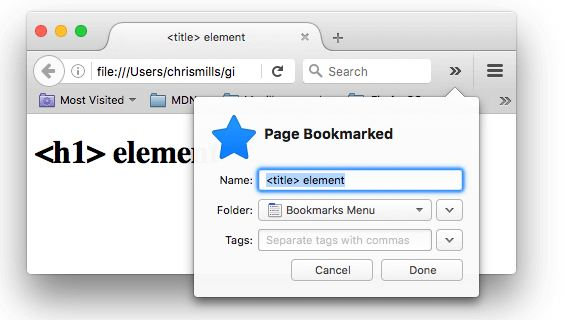
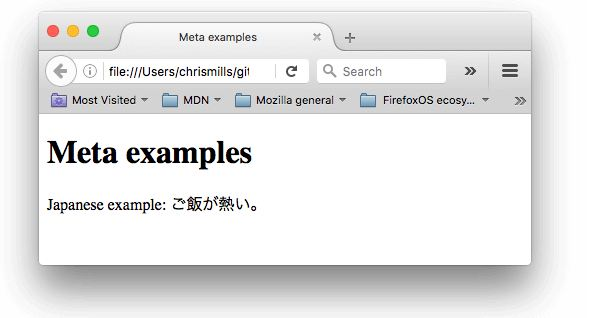
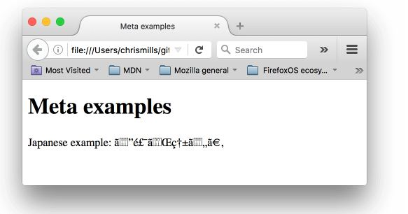
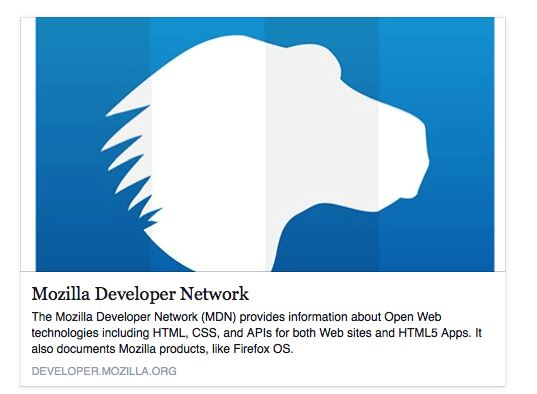
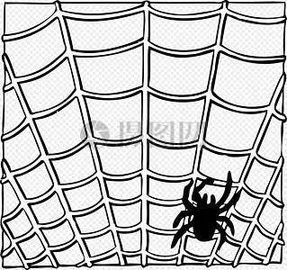

<head>标签里有什么?
任务目标：
- 学习head标签，它的用途是什么，包含哪些元素以及它对页面有什么影响。
什么是head标签?
head （头部或首部）标签的内容不会在浏览器中显示，它的作用是包含页面元数据（即描述文档的各种信息）。
元数据（metadata）：描述数据的数据。一个HTML文档就是数据，<head>的元数据描述HTML文档，eg：这份HTML文档的作者和摘要。
增加一个标题
区别：
●<titie>元素是页面标题（是元数据），<title> 的内容被用在搜索的结果中。
●<h1>是文章标题（是文档内容，在<body>元素里面）。
<!DOCTYPE html>
<html>
<head>
<meta charset="utf-8">
<title><title> element</title>
</head>
<body>
<h1><h1> element</h1>
</body>
</html>

元数据：<meta>元素
“官方的”方式来为一个文档添加元数据——<meta>，其他在这篇文章中提到的也可以被当作元数据。
<meta charset="utf-8">
对于你的每一个页面，使用这个设置是很好的! 比如说，你的页面可以很好的处理英语和日语：

如果将字符集设置为 ISO-8859-1 (拉丁字母的字符集), 那么页面会是乱码的:

添加作者和描述
<meta>元素属性：name 和 content
<meta name="author" content="Chris Mills">
<meta name="description" content="The MDN Learning Area aims to provide
complete beginners to the Web with all they need to know to get
started with developing web sites and applications.">
包含作者的描述：用于联系作者或者一些内容管理系统获取作者信息用于某种目的。
包含页面内容关键字的描述很有用：它可能让页面在搜索引擎的相关搜索中排行更高。术语上叫做SEO（ Search Engine Optimization）。
<meta name="description" content="The Mozilla Developer Network (MDN) provides
information about Open Web technologies including HTML, CSS, and APIs for both
Web sites and HTML5 Apps. It also documents Mozilla products, like Firefox OS.">
注意： 许多 <meta> 属性已经不再使用. 例如, keyword。
其他类型的 metadata
专门为某些网站(如社交网站）创作，提供可用的特定信息。
<meta property="og:image" content="https://developer.cdn.mozilla.net/static/img/opengraph-logo.dc4e08e2f6af.png"><meta property="og:description" content="The Mozilla Developer Network (MDN) provides
{kind=link}
information about Open Web technologies including HTML, CSS, and APIs for both Web sites
and HTML5 Apps. It also documents Mozilla products, like Firefox OS."><meta property="og:title" content="Mozilla Developer Network">

Twitter 也有自己的专有元数据协议
<meta name="twitter:title" content="Mozilla Developer Network">
在你的站点增加自定义图标
页面添加图标的方式有：
1.将图标保存在与网站的首页（索引页）相同的目录中，以.ico格式保存（大多数浏览器将支持更通用的格式，如.gif或.png，但使用.ico格式将确保它能在如Internet Explorer 6一样久远的浏览器显示）
2.将以下行添加到HTML <head>中以引用它：
<link rel="shortcut icon" href="favicon.ico" type="image/x-icon">
<!-- third-generation iPad with high-resolution Retina display: -->
<link rel="apple-touch-icon-precomposed" sizes="144x144" href="https://developer.cdn.mozilla.net/static/img/favicon144.a6e4162070f4.png">
<!-- iPhone with high-resolution Retina display: -->
<link rel="apple-touch-icon-precomposed" sizes="114x114" href="https://developer.cdn.mozilla.net/static/img/favicon114.0e9fabd44f85.png">
<!-- first- and second-generation iPad: -->
<link rel="apple-touch-icon-precomposed" sizes="72x72" href="https://developer.cdn.mozilla.net/static/img/favicon72.8ff9d87c82a0.png">
<!-- non-Retina iPhone, iPod Touch, and Android 2.1+ devices: -->
<link rel="apple-touch-icon-precomposed" href="https://developer.cdn.mozilla.net/static/img/favicon57.a2490b9a2d76.png">
<!-- basic favicon -->
<link rel="shortcut icon" href="https://developer.cdn.mozilla.net/static/img/favicon32.e02854fdcf73.png">
这些注释解释了每个图标的用途 - 这些元素涵盖的东西提供一个高分辨率图标，当网站在iPad的主屏幕显示时使用这些高分辨率图标。
在HTML中应用CSS和JavaScript
<link rel="stylesheet" href="my-css-file.css">
链接 关系 超文本链接
rel：relationship（当前页面与超文本链接的关系），说明超文本链接的文档是一个样式表。
href：Hypertext Reference（超文本链接），目标URL。PS：统一资源定位器（英文：Uniform Resource Locator，简写：URL，俗称网址或链接：一个文本字符串表示资源在网络上的位置）
<script src="my-js-file.js"></script>
放在文档的尾部（在 </body>标签之前）是一个更好的选择 ，这样可以确保在加载脚本之前浏览器解析了HTML的内容，防止浏览器报错（如果脚本加载某个不存在的元素，浏览器会报错）。
可以直接将脚本放入<script>元素中，不指向外部脚本文件。
为文档设定主语言
你可以（也确实应该）为你的站点设定语言。
设置HTML文档主语言，HTML文档会被搜索引擎更有效地被编入索引(例如，让HTML文档在特定语言中正确地显示结果)。
PS：索引：具有相关意义的事项，按照一定方式有序编排起来。例如：把书中的重要名词罗列出来，并给出它们相应的页码，方便读者快速查找该名词的含义。

对于那些使用屏幕阅读器的视障人士也很有用(比如, 法语和英语中都有“six”这个单词，但是发音却完全不同)。
<html lang="en-US">
也可以将文档的分段设置为不同的语言：
<p>Japanese example: <span lang="jp">ご飯が熱い。</span>.</p>
参考：
网页头部的声明应该是用 lang="zh" 还是 lang="zh-cn"？
如何标记的例子：
1. 简体中文页面：html lang=zh-cmn-Hans
2. 繁体中文页面：html lang=zh-cmn-Hant
3. 英语页面：html lang=en
以下两种写法均正确，后者描述更精准。但大部分程序和操作系统都只能识别前者，为了兼容性的考量，推荐使用前者。
zh-CN 中文 (简体, 中国大陆) 对应 cmn-Hans-CN 普通话 (简体, 中国大陆)
zh-SG 中文 (简体, 新加坡) 对应 cmn-Hans-SG 普通话 (简体, 新加坡)
zh-HK 中文 (繁体, 香港) 对应 yue-Hant-HK 粤语 (繁体, 香港)
zh-MO 中文 (繁体, 澳门) 对应 yue-Hant-MO 粤语 (繁体, 澳门)
zh-TW 中文 (繁体, 台湾) 对应 cmn-Hant-TW 普通话 (繁体, 台湾)
扩展：
三个对用户不可见：<head>元素，属性，注释。
SEO（搜索引擎优化）是使网站在搜索结果中更加醒目的过程，也称为提高搜索排名。网络爬虫遵守规则，如果您在为网站进行搜索引擎优化时密切关注这些规则，则会为网站提供最好的机会，以便在首批结果中显示，增加流量和可能的收入（用于电子商务和广告）。但是，大型搜索引擎把结果排名当作商业秘密来保守。
SEO方法分为三大类：
1、技术
使用HTML语义标记内容。浏览网站时，抓取工具只会找您要编入索引的内容。
2、文案
使用访问者的词汇编写内容。使用文本和图像，以便抓取工具可以理解主题。
3、人气
当其他已建立的站点链接到您的站点时，您获得最多流量。
网络爬虫：
通俗地讲，爬虫就是能够自动访问互联网并将网站内容下载下来的的程序或脚本，类似一个机器人，能把别人网站的信息弄到自己的电脑上，再做一些过滤，筛选，归纳，整理，排序等等。
网络爬虫的英文即Web Spider，是一个很形象的名字。把互联网比喻成一个蜘蛛网，那么Spider就是在网上爬来爬去的蜘蛛。

网络蜘蛛是通过网页的链接地址来寻找网页，从网站某一个页面（通常是首页）开始，读取网页的内容，找到在网页中的其它链接地址，然后通过这些链接地址寻找下一个网页，这样一直循环下去，直到把这个网站所有的网页都抓取完为止。如果把整个互联网当成一个网站，那么网络蜘蛛就可以用这个原理把互联网上所有的网页都抓取下来